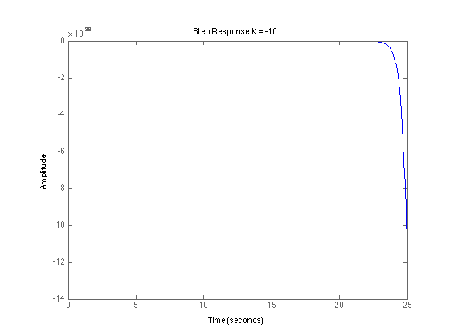
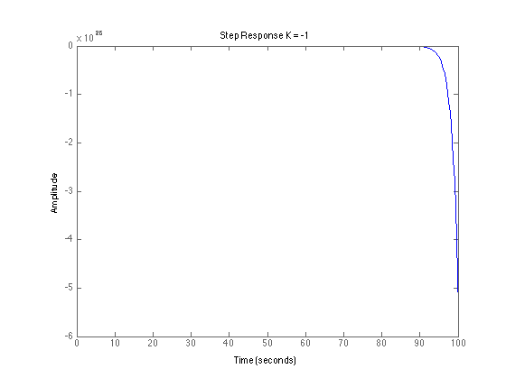
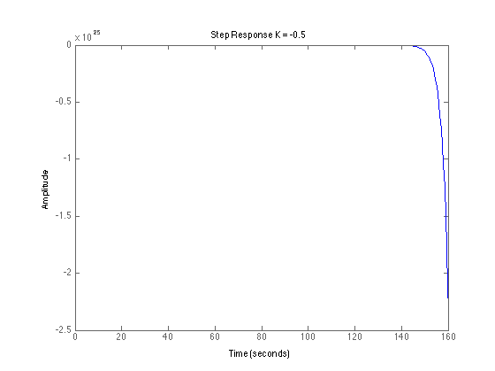
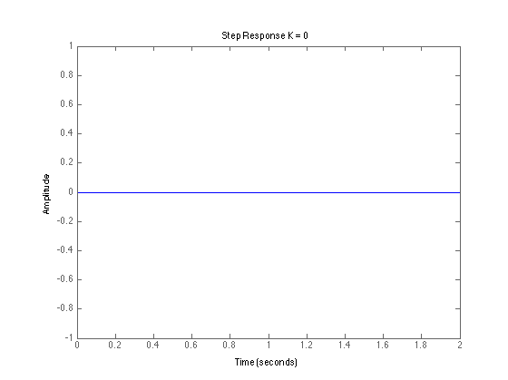
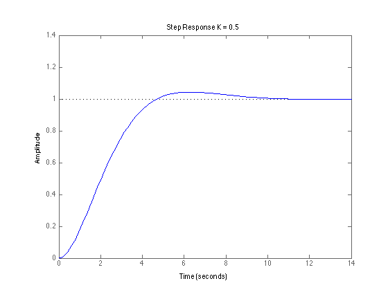
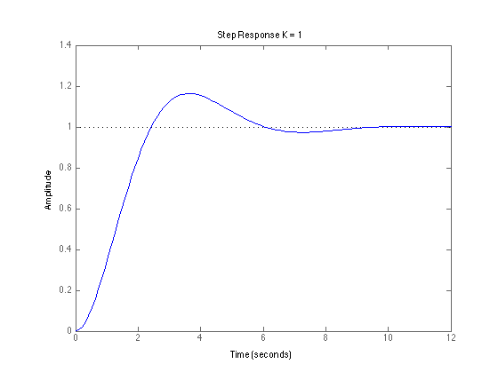
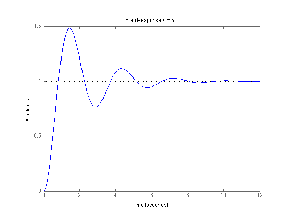
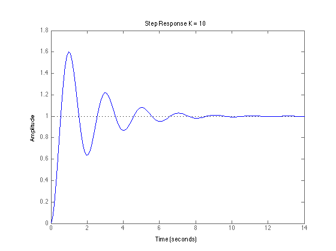
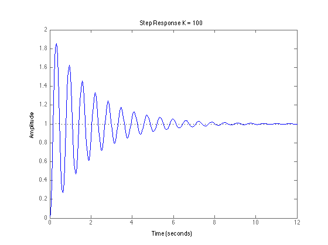

Lab 3 - Prelab
% Define the various values of the gain K and set b, K = [-10 -1 -.5 0 .5 1 5 10 100]; b = 1; % Compute the Step Response of the System for each K. for i = 1:length(K) num = [K(i)]; % Define the numerator, den = [1 b K(i)]; % Define the denominator. sys = tf(num, den); figure step(sys); title(['Step Response K = ', num2str(K(i))]); end        